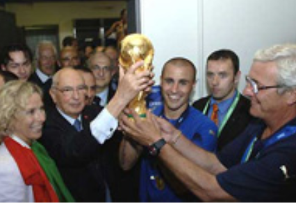

Футбол
Футбол―командный вид спорта,в котором целью является забить мяч в ворота соперника ногами или другими частями тела(кроме рук)большее количество раз,чем команда соперника.
Есть 17 официальных правил игры,каждое из которых содержит список оговорок и руководящих принципов.Эти правила предназначены для приминения на всех уровнях футбола,хотя есть некоторые изминения для таких групп, как юниоры, взрослые,женщины и люди с ограниченными физическими возможностями.Законы очены часто формулировались в общих чертах,которые позволяют упростить их приминения в зависимости от характера игры.